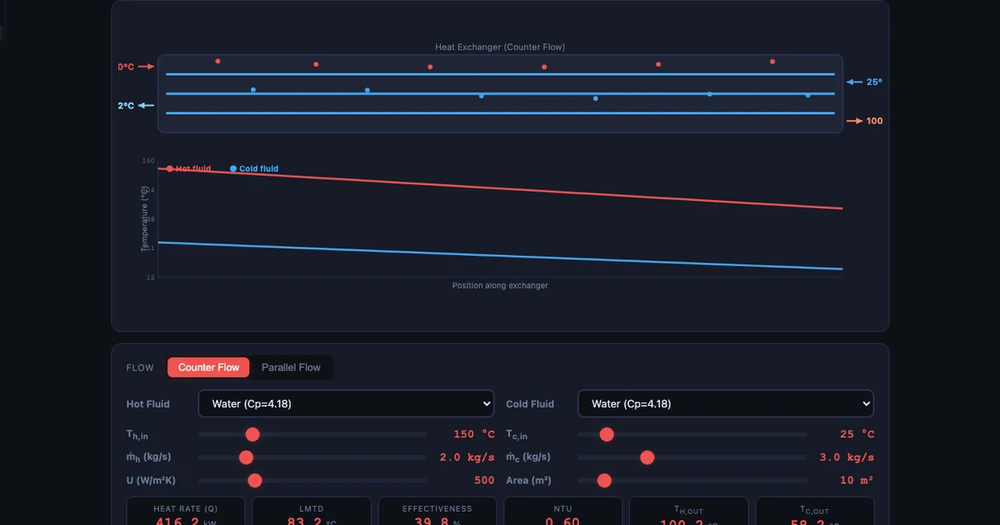
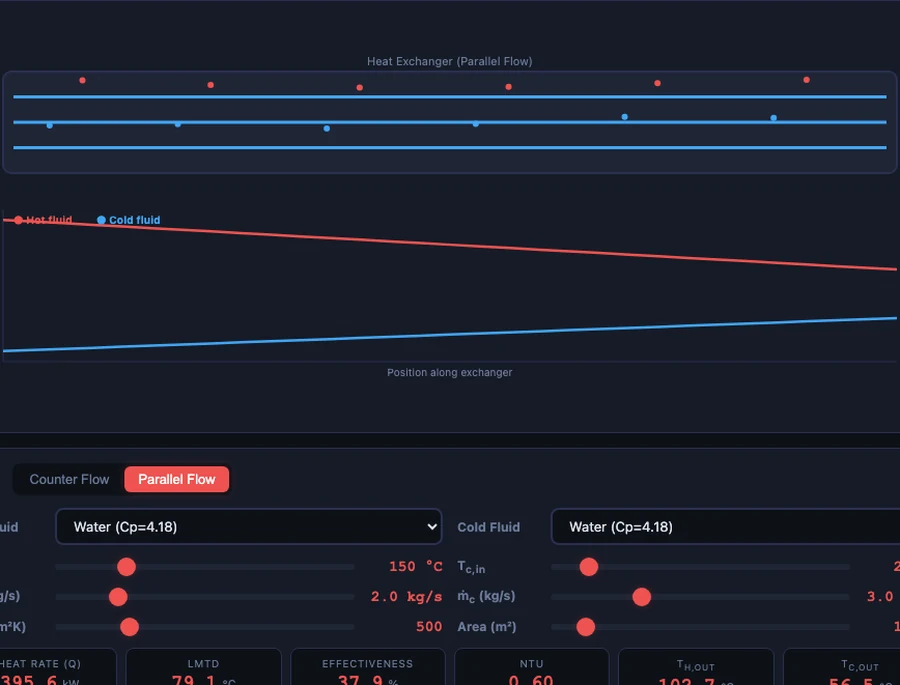

Two Methods, One Simulator: How I Teach LMTD and NTU Side by Side

- Use the LMTD method when all four stream temperatures are known: Q = U·A·ΔT_lm, where ΔT_lm = (ΔT₁ − ΔT₂) / ln(ΔT₁/ΔT₂) — ideal for design and rating problems.
- Use the NTU-effectiveness method when outlet temperatures are unknown: compute NTU = UA/C_min and effectiveness ε = Q/Q_max from inlet conditions alone to predict performance.
- Counter-flow outperforms parallel-flow at the same UA — roughly 80% versus 66% effectiveness for water–water at 150 °C and 25 °C inlets — because it keeps a useful temperature difference along the whole exchanger.
There's a moment in every heat transfer unit where I watch my students' eyes glaze over. It happens right around the time I introduce the second analysis method. They've just about got their heads around LMTD. They've memorised the formula, they can plug in numbers, they're feeling reasonably confident. Then I tell them there's another method — the NTU-effectiveness method — and it's used for entirely different situations. The confidence evaporates instantly.
The problem isn't that LMTD and NTU are hard. It's that teaching them sequentially, as separate chapters, leaves students without any intuition for when to use which. They end up treating them as two different spells to memorise rather than two complementary tools for the same physical problem. The Heat Exchanger Simulator changed how I approach this entirely. It lets me run both methods side by side, on the same exchanger, with the same fluids, in real time — and the comparison that used to take a full lecture now takes about ten minutes of hands-on exploration.
The Problem With Teaching Two Methods at Once
Here's the core confusion my students run into. LMTD says: if you know all four temperatures (both inlets, both outlets), you can calculate the heat transfer rate \(Q\) and from that work out the required area \(A\). Clean, direct, satisfying. Students like it.
Then NTU-effectiveness arrives and the logic flips. NTU says: if you know only the inlet temperatures and the exchanger geometry (UA), you can predict the outlet temperatures. Students ask — reasonably — when would you ever not know the outlet temperatures? The answer is: all the time. Every HVAC commissioning engineer checking whether an installed unit is performing correctly. Every process plant engineer predicting how a heat exchanger will behave when the feed temperature changes. Every automotive cooling system designer who needs to know whether the radiator will keep the engine under 100 °C across a range of ambient conditions.
Once I frame it that way — LMTD for design and rating when you know all four temperatures, NTU for performance prediction when you don't — something clicks. But the clicking is much faster when students can see both methods produce the same \(Q\) on the simulator before they've finished reading the explanation.
LMTD: Start With What the Students Already Understand
I always start the heat exchanger unit with LMTD because it connects directly to something students already know: Newton's law of cooling, \(Q = UA\Delta T\). The question is which \(\Delta T\) to use, because the temperature difference between the hot and cold streams isn't constant — it changes along the exchanger length. The inlet end has one \(\Delta T\), the outlet end has another.
The log-mean temperature difference is the mathematically exact average driving force for heat transfer along the exchanger, derived by integrating over the exchanger length assuming constant \(U\) and constant specific heats:
\[\Delta T_{lm} = \dfrac{\Delta T_1 - \Delta T_2}{\ln(\Delta T_1 / \Delta T_2)}\]where \(\Delta T_1\) and \(\Delta T_2\) are the terminal temperature differences at each end of the exchanger (hot-inlet/cold-outlet end and hot-outlet/cold-inlet end for counter-flow; same-side ends for parallel-flow). The heat transfer rate then follows directly:
\[Q = U \cdot A \cdot \Delta T_{lm}\]I always get asked: why the log? Why not just average \(\Delta T_1\) and \(\Delta T_2\) arithmetically? The honest answer is that the arithmetic mean overestimates the driving force because the temperature difference decays exponentially along the exchanger, not linearly. The log-mean accounts for that. For situations where \(\Delta T_1 / \Delta T_2 < 2\), the arithmetic mean is within about 4% and some engineers use it as a quick check — but the log-mean is always exact.
Let me walk through the numbers with the simulator's default counter-flow setup: \(T_{h,in}\) = 150 °C, \(T_{c,in}\) = 25 °C, U = 500 W/m²·K, A = 10 m². Suppose we want outlet temperatures of \(T_{h,out}\) = 80 °C and \(T_{c,out}\) = 70 °C:
- \(\Delta T_1\) (hot-inlet end, counter-flow) = \(T_{h,in} - T_{c,out}\) = 150 °C − 70 °C = 80 °C
- \(\Delta T_2\) (hot-outlet end, counter-flow) = \(T_{h,out} - T_{c,in}\) = 80 °C − 25 °C = 55 °C
- \(\Delta T_{lm}\) = (80 − 55) / ln(80/55) = 25 / 0.373 = 67.0 °C
- \(Q\) = 500 × 10 × 67.0 = 335 kW
Those numbers land in the simulator's output panel the moment you enter them. No waiting, no arithmetic slips on the board. I can ask students to change one variable — raise \(U\) to 800 W/m²·K, say — and watch \(Q\) update instantly. That kind of sensitivity exploration used to fill an entire tutorial; now it takes three minutes.
Counter-Flow vs Parallel-Flow: The Visual That Changes Everything
If there's one comparison that makes heat exchanger theory stick, it's this one. Counter-flow beats parallel-flow at the same UA. Students see this asserted in every textbook. They can calculate it. But they don't really feel it until they see the temperature profiles side by side.

In counter-flow, the hot stream enters at one end and the cold stream enters at the other. This means the hot stream — even as it cools — is always exchanging heat with the coldest available cold fluid, maintaining a useful temperature difference all the way to its exit. In parallel-flow, both streams enter at the same end. The temperature difference is largest at the inlet and shrinks steadily toward the outlet, and it can never reach a value below what a single equilibrium would allow. The profiles converge; they cannot cross.
With the simulator's default fluids (water-water) and boundary conditions (150 °C hot inlet, 25 °C cold inlet), switching from counter-flow to parallel-flow drops effectiveness from roughly 80% to 66% with identical U and A values. That's a 17% penalty for running the streams in the wrong direction. I ask students to toggle between the two modes and write down the effectiveness each time. Without exception, the one who's been saying "I get it, they're different" until this point suddenly looks genuinely surprised by the gap.
This is also where I introduce the physical constraint that parallel-flow carries: the cold outlet temperature can never exceed the hot outlet temperature. In counter-flow, the cold outlet can actually exceed the hot outlet — as long as it stays below the hot inlet. That's not an edge case; it's the working principle behind regenerators in gas turbine cycles and in industrial heat recovery systems.
NTU-Effectiveness: Solving the Unknown-Exit-Temperature Problem
After LMTD has settled in, I pose a different problem. A heat exchanger is already installed in a process plant. You know UA (from the manufacturer's data and experience). You know the inlet temperatures. The process conditions have changed and you need to know the new outlet temperatures. You can't use LMTD because you'd need the outlets to calculate LMTD, and the outlets are exactly what you're trying to find. What do you do?
This is where NTU-effectiveness steps in. It defines two dimensionless groups. The Number of Transfer Units:
\[\text{NTU} = \dfrac{UA}{C_{\min}}\]where \(C_{\min} = \dot{m} c_p\) for whichever stream has the smaller heat capacity rate. And the effectiveness:
\[\varepsilon = \dfrac{Q}{Q_{\max}} = \dfrac{Q}{C_{\min}(T_{h,in} - T_{c,in})}\]\(Q_{\max}\) is the thermodynamic ceiling on heat transfer — what you'd get if you had an infinitely long counter-flow exchanger, limited only by the stream with the smaller heat capacity rate reaching the inlet temperature of the other stream. For a given flow arrangement, \(\varepsilon\) is a function of NTU and the heat capacity ratio \(C_r = C_{\min}/C_{\max}\). The relationship is tabulated in textbooks and built into the simulator.
The power is in the direction of calculation. Given UA, \(\dot{m}\), \(c_p\) values, and only the two inlet temperatures, you compute NTU, look up \(\varepsilon\), then recover \(Q = \varepsilon \cdot C_{\min} \cdot (T_{h,in} - T_{c,in})\), and from there both outlet temperatures fall straight out of energy balances. The simulator runs this calculation the moment you switch to NTU mode — and it shows the same \(Q\) as the LMTD calculation when the boundary conditions agree. Seeing both methods converge on the same answer is genuinely effective pedagogy; it's the kind of consistency check that builds confidence in equations rather than just in memorised procedures.
A design exercise I run every year: given a target \(Q\) of 280 kW, the same fluids, and the same inlet temperatures, what area do you need? Working backwards through the NTU method gives A = 6.97 m². Students who've used the simulator to build intuition for how \(\varepsilon\) scales with NTU can estimate this before they've finished the calculation — they already know that 280 kW is a bit more than half of \(Q_{\max}\) for these conditions, so NTU won't be large, and a modest area will do it.
Five Fluids, Real Industry Numbers
One of the things that separates the heat exchanger simulator from a formula sheet is the fluid library. Five working fluids are available — Water, Engine Oil, Air, Steam (condensing), and Water-Glycol 50/50 — and their thermophysical properties are baked into the calculations. Each one shows up in different parts of industry, and I use the simulator to connect the theory to real applications.
Water is the workhorse. Shell-and-tube water–water exchangers dominate HVAC systems, district heating networks, and process cooling in refineries. The simulator's default U of 500 W/m²·K is on the conservative end of the water–water range (500–1 500 W/m²·K is typical); students can raise it toward 1 000 to model a well-designed plate heat exchanger doing the same duty.
Engine Oil represents the viscous-fluid side of an automotive oil cooler. Oil's low thermal conductivity means convection coefficients are an order of magnitude below water's, and U for oil–water exchangers sits around 50–200 W/m²·K. Switching the hot-side fluid to Engine Oil in the simulator while keeping water on the cold side shows students immediately why oil coolers are so much larger than their heat duty would suggest if you assumed water properties.
Air gives gas-side behaviour — relevant to intercoolers on turbocharged engines, charge-air coolers on large diesel units, and waste-heat recovery air preheaters in gas turbines. U values of 10–50 W/m²·K make fins essential in real applications; the simulator uses a plain-surface U, so I always point out that real air-side exchangers are almost always finned.
Steam (condensing) models a steam-heated process exchanger or a condenser in a Rankine cycle. Condensing steam has a convection coefficient of 5 000–25 000 W/m²·K on the shell side, which means it's almost never the controlling resistance. U is dominated by the tube-side fluid, which is why steam heaters are so compact. Selecting Steam in the simulator and watching Q jump upward while the LMTD barely moves drives this point home more clearly than any lecture can.
Water-Glycol 50/50 is the standard automotive coolant mix. Its properties (density, specific heat, viscosity) differ meaningfully from pure water — lower thermal conductivity, higher viscosity — and it represents the kind of real-world complication that exam questions often ignore but that automotive and HVAC engineers deal with daily. I use it for the design-project element: size a radiator for a 100 kW engine at 105 °C coolant inlet, 35 °C ambient air.
How I Sequence the Heat Exchanger Unit
My unit runs over four weeks, and the simulator appears in three of them.
Week 1 — Textbook and derivation. I cover the energy balance (\(\dot{Q} = \dot{m} c_p \Delta T\) for each stream), derive the LMTD expression from first principles, and do the counter-flow/parallel-flow comparison on the whiteboard with clean numbers. No simulator yet — I want students to have worked through the derivation themselves before they offload the arithmetic to a tool.
Week 2 — Simulator LMTD. Students open the Heat Exchanger Simulator and work through a structured sheet: run three configurations (counter-flow, parallel-flow, counter-flow with halved A), record \(\Delta T_{lm}\), \(Q\), and effectiveness for each. Then answer: what area do you need to achieve the same \(Q\) in parallel-flow as in counter-flow? The simulator makes it possible to answer that question by trial-and-error in under two minutes; doing it analytically takes ten. Both routes are instructive.
Week 3 — Simulator NTU. I pose the performance-prediction problem: the same exchanger, but the hot-fluid flow rate has dropped 30%. Use NTU to predict the new outlet temperatures. Students work through the calculation on paper, then verify against the simulator. The ones who've got the method right land within 2% of the simulator output. The ones who've mixed up \(C_{\min}\) and \(C_{\max}\) can see exactly where their result diverges and correct it themselves — no red pen required.
Week 4 — Design project. Each student gets a different industrial scenario: steam heater, oil cooler, glycol radiator. They must calculate the required area using both LMTD and NTU (the answers must agree), specify a realistic U from reference tables, and justify their flow configuration choice. The simulator acts as their verification tool throughout. The final deliverable is a one-page technical memo, not a worksheet — because that's what they'll be writing on the job.
Between the IC engine testing unit and the heat exchanger unit, students start to recognise a pattern: the best thermodynamic tools share the same structure. You have an idealised model (the log-mean, the NTU-effectiveness relation, the air-standard cycle), a set of real-world corrections (fouling factor F, mechanical efficiency), and simulation as the bridge between the two. Once they see that pattern, picking up new simulation tools in industry becomes much less intimidating. You can read more about how I use this layered approach in the IC Engine Test Rig and Morse Test guide.
The multi-pass correction factor \(F\) is worth mentioning briefly, because it comes up in the design project. For multi-pass shell-and-tube or cross-flow arrangements, the effective mean temperature difference is lower than the pure counter-flow LMTD. The corrected equation is:
\[Q = U \cdot A \cdot F \cdot \Delta T_{lm,CF}\]where \(F \leq 1\) is read from TEMA charts and depends on the temperature effectiveness parameters \(P\) and \(R\). Counter-flow has \(F = 1\) by definition — it's the reference case. If a design gives \(F < 0.75\), the standard engineering recommendation is to add a second shell rather than accept the penalty; the simulator makes it easy to check whether a given specification falls into that regime before committing to a layout.
Try It Yourself
All tools below are free — no account, no download.
Key Takeaways
- Use LMTD when you know all four temperatures and want to find \(Q\) or required area \(A\). Use NTU-effectiveness when outlet temperatures are unknown and you want to predict performance from inlet conditions and exchanger geometry.
- Counter-flow achieves higher effectiveness than parallel-flow at the same UA: 80% vs 66% for water–water at 150 °C and 25 °C inlets in the simulator's default configuration.
- The LMTD worked example gives \(\Delta T_{lm}\) = 67 °C and Q = 335 kW for counter-flow with \(T_{h,out}\) = 80 °C and \(T_{c,out}\) = 70 °C at U = 500 W/m²·K and A = 10 m².
- NTU = UA/C_min. For the same setup, working backwards from a target Q of 280 kW gives a required area of just 6.97 m² — the NTU method delivers the answer in one pass without iteration.
- The five fluid presets (Water, Engine Oil, Air, Steam condensing, Water-Glycol 50/50) each represent a real industrial application. U varies by a factor of 300 across the range — 10 W/m²·K for gas-gas up to 3 000 W/m²·K for steam condensing.
- When \(F < 0.75\) for multi-pass configurations, adding a shell is more economical than accepting the temperature-difference penalty. The simulator flags this in the correction-factor output.
Frequently Asked Questions
What is the LMTD method and when should I use it?
The Log Mean Temperature Difference method calculates heat transfer rate as \(Q = U \cdot A \cdot \Delta T_{lm}\), where \(\Delta T_{lm} = (\Delta T_1 - \Delta T_2) / \ln(\Delta T_1 / \Delta T_2)\). It is the right choice when you know the inlet AND outlet temperatures of both streams — the classic rating or design problem where you want to find the required heat transfer area or confirm whether an existing exchanger meets a specification. If you don't know the outlet temperatures and need to find them, use the NTU-effectiveness method instead.
What is the NTU-effectiveness method and when does LMTD fail?
LMTD requires you to know all four temperatures, so it can't directly solve problems where one or both outlet temperatures are unknown. The NTU-effectiveness method bypasses this with two dimensionless parameters: effectiveness \(\varepsilon = Q/Q_{\max}\) (ratio of actual to maximum possible heat transfer) and \(\text{NTU} = UA/C_{\min}\) (number of transfer units, where \(C_{\min}\) is the smaller heat capacity rate). Given only inlet conditions and exchanger geometry, you calculate \(\varepsilon\) from NTU and \(C_r = C_{\min}/C_{\max}\), then recover the actual exit temperatures. This is the method used in simulation and performance prediction.
Why is counter-flow more effective than parallel-flow?
In counter-flow, hot and cold streams run in opposite directions — the hot stream exits near the cold stream inlet, maintaining a temperature difference along the entire exchanger length. In parallel-flow, both streams enter at the same end; the temperature difference is largest at the inlet and shrinks continuously, approaching zero at the outlet. This means parallel-flow has a lower average driving force and can never heat the cold stream above the hot-stream outlet temperature. Counter-flow has no such constraint and achieves higher effectiveness at the same UA.
What is the overall heat transfer coefficient U and how is it estimated?
The overall heat transfer coefficient \(U\) combines resistance from both convective film coefficients (\(h_h\) and \(h_c\)) and the wall conduction: \(1/U = 1/h_h + t/k_{\text{wall}} + 1/h_c\). Typical values: water–water shell-and-tube 500–1 500 W/m²·K; gas–gas 10–50 W/m²·K; steam condensing–water 1 000–3 000 W/m²·K. In industry, fouling factors \(R_f\) are added: \(1/U_{\text{actual}} = 1/U_{\text{clean}} + R_{f,h} + R_{f,c}\). The simulator uses a single \(U\) input to let students focus on the LMTD/NTU concepts without getting lost in the \(h\)-estimation detail.
What does the correction factor F account for in multi-pass heat exchangers?
For multi-pass or cross-flow arrangements, the true mean temperature difference is less than the counter-flow LMTD. A correction factor \(F\) (always \(\leq 1\) for non-counter-flow arrangements, \(F = 1\) for pure counter-flow) is applied: \(Q = U \cdot A \cdot F \cdot \Delta T_{lm,CF}\). \(F\) is a function of two parameters \(P\) (cold-side temperature ratio) and \(R\) (heat capacity ratio), read from TEMA correction factor charts. Values of \(F\) below 0.75 are generally not economical — at that point, adding another shell is more cost-effective than trying to squeeze performance out of the existing one.
Two methods, one physical reality. LMTD and NTU aren't rivals — they're the same heat exchanger viewed from two different angles: what you're designing versus what you're predicting. Once students see them produce the same \(Q\) on the same simulator, the confusion resolves itself. The log-mean stops being an arbitrary formula and the NTU number stops being an abstract dimensionless group. They become two ways of describing a heat exchanger they've already watched work.
Load up the Heat Exchanger Simulator and try the comparison yourself — no account required, works in any browser.